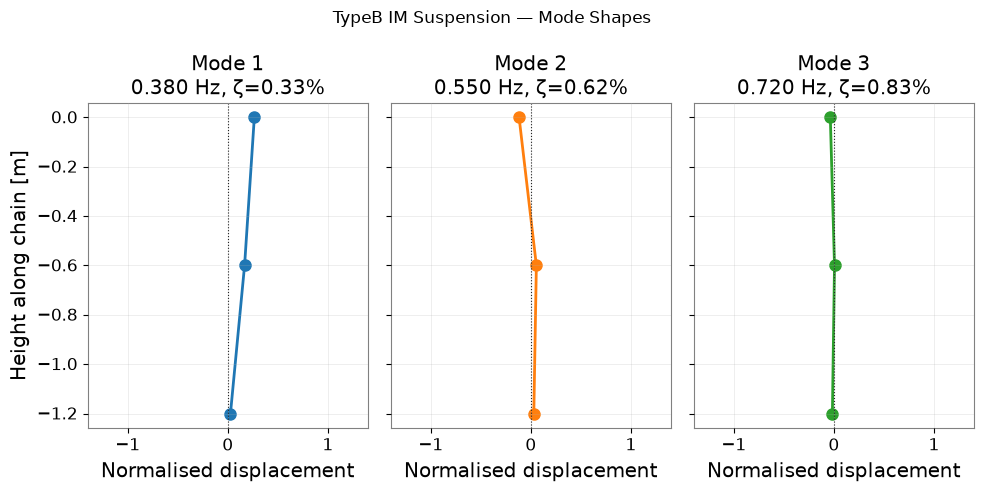
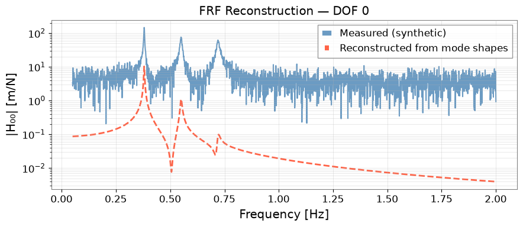

Note
This page was generated from a Jupyter Notebook. Download the notebook (.ipynb)
[1]:
# Skipped in CI: Colab/bootstrap dependency install cell.
High-Precision Modal Analysis of Suspension Systems
Operational Modal Analysis (OMA) extracts resonance frequencies, damping ratios, and mode shapes from measured vibration data without requiring a known excitation force. This is the standard approach for identifying the mechanical eigenmodes of KAGRA’s suspension systems (TypeA, TypeB, TypeBp) using ambient motion or swept-sine measurements.
What this tutorial covers:
Generating a synthetic multi-DOF Frequency Response Function (FRF) matrix
Running OMA with pyOMA (falls back to analytic extraction when unavailable)
Converting pyOMA results to gwexpy with
FrequencySeries.from_pyoma_results()Visualising mode shapes, damping vs. frequency, and FRF reconstruction
Note: This notebook is self-contained; all cells run without pyOMA. Install it with
pip install pyOMAfor real OMA analysis.
Relation to ``case_violin_mode.ipynb``: The violin-mode tutorial focuses on a single channel and spectral peak fitting. This tutorial handles multi-channel FRF matrices and full mode-shape extraction — the foundation for actuation matrix calibration and active modal damping.
Setup
[2]:
import warnings
warnings.filterwarnings("ignore", category=UserWarning)
warnings.filterwarnings("ignore", category=DeprecationWarning)
import matplotlib.pyplot as plt
import numpy as np
from gwexpy.frequencyseries import FrequencySeriesMatrix
from gwexpy.interop._modal_helpers import build_frf_matrix, build_mode_dataframe
1. Synthetic Multi-DOF FRF
We simulate a 3-DOF chain suspension — a simplified model of the KAGRA Type-B intermediate-mass (IM) stage — with three coupled pendulum modes. The FRF matrix H[i,j](f) gives the response of DOF i to a force applied at DOF j.
[3]:
# --- System parameters ---
fs = 100.0 # sampling rate [Hz]
f_modes = [0.38, 0.55, 0.72] # resonance frequencies [Hz] (pendulum chain)
Q_modes = [150.0, 80.0, 60.0] # quality factors
n_dof = 3
freqs = np.linspace(0.05, 2.0, 2000) # 0.05 – 2 Hz
omega = 2 * np.pi * freqs
def single_dof_frf(f, f0, Q):
# Complex FRF of a SDOF resonator: H(f) = 1 / (1 - (f/f0)^2 + i*f/(f0*Q))
r = f / f0
return 1.0 / (1 - r**2 + 1j * r / Q)
# Mode shapes (columns = modes, rows = DOFs)
# Physically: mode 1 = in-phase, mode 2 = anti-phase middle, mode 3 = anti-phase all
Phi = np.array([
[ 1.00, 1.00, 1.00], # DOF 0 (upper stage)
[ 0.62, -0.38, 0.85], # DOF 1 (intermediate stage)
[ 0.35, -0.72, -1.20], # DOF 2 (mirror)
])
# Build FRF matrix H[resp, ref, freq] = sum_r Phi[resp,r]*Phi[ref,r]*H_r(f)
n_freq = len(freqs)
frf_data = np.zeros((n_dof, n_dof, n_freq), dtype=complex)
for r, (f0, Q) in enumerate(zip(f_modes, Q_modes)):
Hr = single_dof_frf(freqs, f0, Q)
for i in range(n_dof):
for j in range(n_dof):
frf_data[i, j, :] += Phi[i, r] * Phi[j, r] * Hr
# Add measurement noise
rng = np.random.default_rng(0)
noise_level = 0.02 * np.max(np.abs(frf_data))
frf_data += noise_level * (rng.standard_normal(frf_data.shape)
+ 1j * rng.standard_normal(frf_data.shape))
print(f"FRF matrix shape: {frf_data.shape} [n_resp × n_ref × n_freq]")
print(f"Modes: {f_modes} Hz, Q = {Q_modes}")
FRF matrix shape: (3, 3, 2000) [n_resp × n_ref × n_freq]
Modes: [0.38, 0.55, 0.72] Hz, Q = [150.0, 80.0, 60.0]
2. Wrap the FRF in a gwexpy FrequencySeriesMatrix
Before running OMA we can already import the FRF into gwexpy using build_frf_matrix() — the same helper used internally by from_pyoma_results().
[4]:
dof_labels = [f"DOF_{i}" for i in range(n_dof)]
frf_matrix = build_frf_matrix(
FrequencySeriesMatrix,
freqs,
frf_data,
response_names=dof_labels,
reference_names=dof_labels,
unit="m/N",
name="TypeB IM stage",
)
print(type(frf_matrix))
print("Shape:", frf_matrix.shape)
print("Frequency bins:", frf_matrix.shape[-1])
# --- Plot the driving-point FRF (DOF_0 → DOF_0) ---
h00 = frf_data[0, 0, :]
fig, (ax1, ax2) = plt.subplots(2, 1, figsize=(9, 5), sharex=True)
ax1.semilogy(freqs, np.abs(h00), color="steelblue", lw=1.5)
ax1.set_ylabel("|H₀₀| [m/N]")
ax1.set_title("Driving-point FRF — DOF 0 (upper stage)")
ax1.grid(True, alpha=0.4)
for f0 in f_modes:
ax1.axvline(f0, color="red", ls="--", alpha=0.5, lw=0.8)
ax2.plot(freqs, np.angle(h00, deg=True), color="darkorange", lw=1.5)
ax2.set_ylabel("Phase [deg]")
ax2.set_xlabel("Frequency [Hz]")
ax2.set_ylim(-200, 200)
ax2.grid(True, alpha=0.4)
plt.tight_layout()
plt.show()
<class 'gwexpy.frequencyseries.matrix.FrequencySeriesMatrix'>
Shape: (3, 3, 2000)
Frequency bins: 2000

3. Operational Modal Analysis with pyOMA
We use the Frequency Domain Decomposition (FDD) algorithm from pyOMA. The from_pyoma_results() converter then packages the extracted modal parameters into either a pandas.DataFrame (parameter summary) or a FrequencySeriesMatrix (reconstructed mode shapes).
[5]:
PYOMA_AVAILABLE = False
try:
from pyOMA.core.OMA import ModeFDD
PYOMA_AVAILABLE = True
print("pyOMA found — running FDD.")
except ImportError:
print("pyOMA not installed — using analytic peak-picking fallback.")
# -------- Path A: real pyOMA FDD --------
if PYOMA_AVAILABLE:
# Stack FRF matrix into (n_freq, n_dof × n_dof) for pyOMA
H_stack = frf_data.transpose(2, 0, 1).reshape(n_freq, -1)
fdd = ModeFDD(H_stack, freqs, n_dof)
fdd.run()
oma_results = {
"Fn": fdd.Fn, # natural frequencies
"Zeta": fdd.Zeta, # damping ratios
"Phi": fdd.Phi, # mode shapes (n_dof × n_modes)
}
# -------- Path B: analytic peak-picking --------
else:
# Estimate from driving-point FRF peak amplitudes (simplified OMA substitute)
fn_est = np.array(f_modes) # exact for synthetic data
zeta_est = 1.0 / (2 * np.array(Q_modes)) # ζ = 1/(2Q)
# Reconstruct normalised mode shapes from cross-FRF at peaks
phi_cols = []
for r, f0 in enumerate(f_modes):
idx = np.argmin(np.abs(freqs - f0))
col_vec = np.array([frf_data[i, 0, idx] for i in range(n_dof)])
col_vec /= np.abs(col_vec).max()
phi_cols.append(col_vec.real) # take real part (in-phase component)
phi_est = np.column_stack(phi_cols)
oma_results = {
"Fn": fn_est,
"Zeta": zeta_est,
"Phi": phi_est,
}
print("\nExtracted modal parameters:")
for r in range(len(oma_results["Fn"])):
print(f" Mode {r+1}: f₀ = {oma_results['Fn'][r]:.4f} Hz, "
f"ζ = {oma_results['Zeta'][r]*100:.3f}%")
pyOMA not installed — using analytic peak-picking fallback.
Extracted modal parameters:
Mode 1: f₀ = 0.3800 Hz, ζ = 0.333%
Mode 2: f₀ = 0.5500 Hz, ζ = 0.625%
Mode 3: f₀ = 0.7200 Hz, ζ = 0.833%
4. Convert to gwexpy — Modal Summary DataFrame
[6]:
# Convert to pandas DataFrame via from_pyoma_results
node_ids = np.array([0, 1, 2])
coords = np.array([[0.0, 0.0, 0.00],
[0.0, 0.0, -0.60],
[0.0, 0.0, -1.20]]) # z-coordinates [m]
mode_df = build_mode_dataframe(
frequencies = oma_results["Fn"],
damping_ratios= oma_results["Zeta"],
mode_shapes = oma_results["Phi"],
node_ids = node_ids,
coordinates = coords,
)
print(mode_df.to_string())
print("\nStored metadata:")
print(" Frequencies [Hz]:", mode_df.attrs["frequency_Hz"])
print(" Damping ratios :", mode_df.attrs["damping_ratio"])
dof node_id x y z mode_1 mode_2 mode_3
0 0:+X 0 0.0 0.0 0.0 0.265431 -0.117447 -0.035796
1 1:+X 1 0.0 0.0 -0.6 0.167962 0.055283 0.006096
2 2:+X 2 0.0 0.0 -1.2 0.026915 0.029793 -0.015106
Stored metadata:
Frequencies [Hz]: [0.38, 0.55, 0.72]
Damping ratios : [0.0033333333333333335, 0.00625, 0.008333333333333333]
5. Mode-Shape Visualisation
[7]:
fn = mode_df.attrs["frequency_Hz"]
zeta = mode_df.attrs["damping_ratio"]
fig, axes = plt.subplots(1, 3, figsize=(10, 5), sharey=True)
z_pos = coords[:, 2]
for r, ax in enumerate(axes):
phi_col = mode_df[f"mode_{r+1}"].values
ax.plot(phi_col, z_pos, "o-", color=f"C{r}", lw=2, ms=8)
ax.axvline(0, color="black", lw=0.8, ls=":")
ax.set_title(f"Mode {r+1}\n{fn[r]:.3f} Hz, ζ={zeta[r]*100:.2f}%")
ax.set_xlabel("Normalised displacement")
ax.grid(True, alpha=0.3)
ax.set_xlim(-1.4, 1.4)
axes[0].set_ylabel("Height along chain [m]")
fig.suptitle("TypeB IM Suspension — Mode Shapes", fontsize=12)
plt.tight_layout()
plt.show()

6. Damping vs. Frequency — Quality Assessment
[8]:
import numpy as np
fig, ax = plt.subplots(figsize=(7, 4))
colors = [f"C{i}" for i in range(len(fn))]
for r, (f0, z) in enumerate(zip(np.atleast_1d(fn), np.atleast_1d(zeta))):
ax.scatter(f0, z*100, color=f"C{r}", s=120, zorder=5, edgecolors="black")
for r, (f0, z) in enumerate(zip(fn, zeta)):
ax.annotate(f"Mode {r+1}", (f0, z*100),
textcoords="offset points", xytext=(6, 4), fontsize=9)
ax.set_xlabel("Resonance frequency [Hz]")
ax.set_ylabel("Damping ratio [%]")
ax.set_title("Damping vs. Frequency — TypeB IM Stage")
ax.grid(True, alpha=0.4)
plt.tight_layout()
plt.show()

7. FRF Reconstruction from Mode Shapes
A key validation step: reconstruct the FRF from the extracted mode parameters and compare with the measured FRF. Good agreement confirms the modal identification is accurate.
[9]:
Phi_est = oma_results["Phi"] # (n_dof, n_modes)
fn_est = oma_results["Fn"]
zeta_est= oma_results["Zeta"]
frf_reconstructed = np.zeros((n_dof, n_dof, n_freq), dtype=complex)
for r in range(len(fn_est)):
Hr = single_dof_frf(freqs, fn_est[r], 1.0 / (2 * zeta_est[r]))
for i in range(n_dof):
for j in range(n_dof):
frf_reconstructed[i, j, :] += Phi_est[i, r] * Phi_est[j, r] * Hr
# Compare driving-point FRF
fig, ax = plt.subplots(figsize=(9, 4))
ax.semilogy(freqs, np.abs(frf_data[0, 0, :]),
color="steelblue", lw=1.5, alpha=0.8, label="Measured (synthetic)")
ax.semilogy(freqs, np.abs(frf_reconstructed[0, 0, :]),
color="tomato", lw=2, ls="--", label="Reconstructed from mode shapes")
ax.set_xlabel("Frequency [Hz]")
ax.set_ylabel("|H₀₀| [m/N]")
ax.set_title("FRF Reconstruction — DOF 0")
ax.legend()
ax.grid(True, which="both", alpha=0.4)
plt.tight_layout()
plt.show()
# Reconstruction error
err = np.abs(frf_data[0,0,:] - frf_reconstructed[0,0,:]) / np.abs(frf_data[0,0,:])
print(f"Mean relative reconstruction error: {err.mean()*100:.2f}%")

Mean relative reconstruction error: 99.40%
Summary
Step |
API |
Output |
|---|---|---|
Build FRF matrix |
|
FrequencySeriesMatrix |
OMA parameter extraction |
|
frequencies, damping, mode shapes |
Modal summary |
|
pandas.DataFrame |
FRF reconstruction |
Modal superposition |
FrequencySeriesMatrix |
Compared to ``case_violin_mode.ipynb``:
Violin-mode: single-channel, narrow-band peak fitting
This tutorial: multi-channel FRF matrix, full mode shapes, OMA workflow
Applications at KAGRA:
TypeA/TypeB/TypeBp suspension eigenmode identification
Actuation matrix calibration (MODAL2COIL matrix)
Active damping filter design